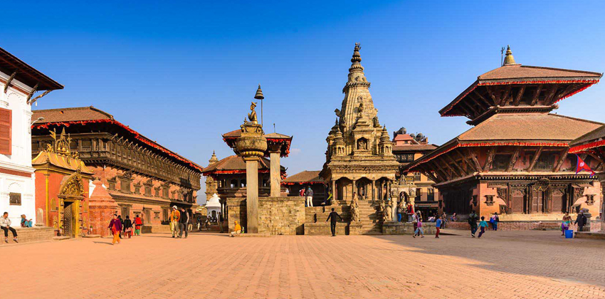
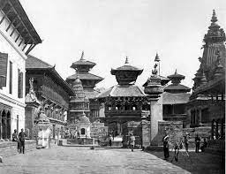

INTRODUCTION.... |
||
|  | ||
|
Bhaktapur is the smallest city of Nepal as well the most densely populated. Along with Kathmandu and Lalitpur, Bhaktapur is one of the three main cities of the Kathmandu Valley and is a major Newar settlement of the country. |
||
| Bhaktapur (Nepali and Sanskrit: भक्तपुर , pronounced [bʱʌkt̪ʌpur]. "City of Devotees"), known locally as Khwopa (Nepal Bhasa: Khvapa) and historically called Bhatgaon, is a city in the east corner of the Kathmandu Valley in Nepal located about 13 kilometres (8.1 mi) from the capital city, Kathmandu. Bhaktapur is the smallest city of Nepal as well the most densely populated. Along with Kathmandu and Lalitpur, Bhaktapur is one of the three main cities of the Kathmandu Valley and is a major Newar settlement of the country. The city is also known for its Newar tradition, cuisine and artisans. | ||
HISTORY.... |
||
|  |
BHAKTAPUR |
|
|
The city was founded in 12th century by King Anand Dev Malla. Bhaktapur was the capital city of the Greater Malla Kingdom in the Kathmandu Valley till the 15th century AD. The many of Bhaktapur's greatest monuments were built by the then Malla rulers.The Malla Kingdom was in rule until the 15th century. Bhaktapur was an independent kingdom from the 12th century until the 18th century.Some of the Mallas kings that rules on Bhaktapur were Jitamitra Malla, Bhupatindra Malla, and Ranjit Malla. These kings played a vital role to build and protect the independent Bhaktapur Kingdom. These rulers build many unique palaces and pagoda-style temples at Bhaktapur. |
||
{kind=link}
{kind=link}